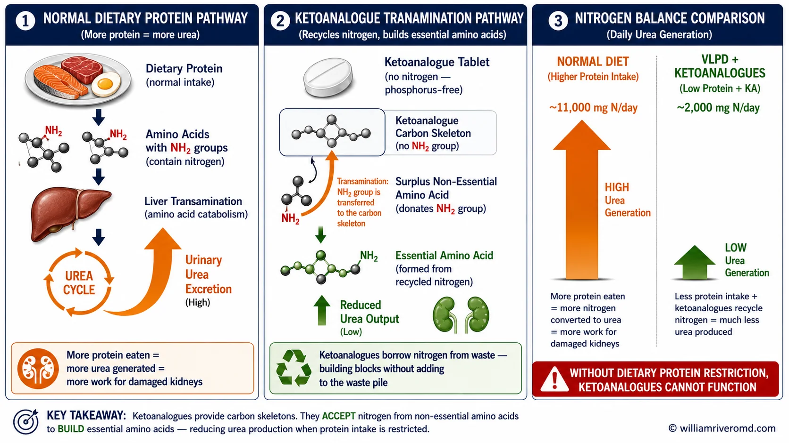
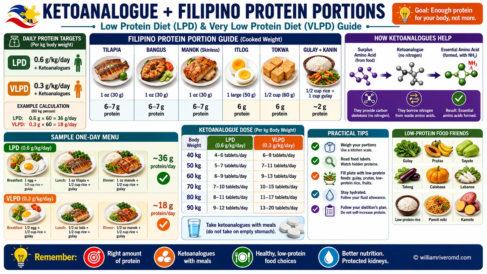

| LPD & VLPD Diet Plan — Ketoanalogue Companion | W.G.M. Rivero MD · FPCP · DPSN · · williamriveromd.com · 2026 |
|
Patient Diet Companion · CKD Nutrition
LPD & VLPD Diet Plan
for CKD Filipino meal plans for patients on ketoanalogues. Covers weights 40–80 kg. Use with your nephrologist's protein target and KA prescription.
|
🥗
W.G.M. Rivero MD
FPCP · DPSN Nephrologist
williamriveromd.com
|
0.6 g/kg LPD Protein Target |
0.3 g/kg VLPD Protein Target |
30–35 kcal/kg Calorie Target |
1 tab/5 kg KA Dose (Ketosteril) |
| Body Weight | LPD Protein (0.6 g/kg) |
VLPD Protein (0.3 g/kg) |
Calories (30–35 kcal/kg) |
KA Tablets (1 tab / 5 kg) |
|---|---|---|---|---|
| 40 kg | 24 g/day | 12 g/day | 1,200–1,400 kcal | 8 tabs/day |
| 50 kg | 30 g/day | 15 g/day | 1,500–1,750 kcal | 10 tabs/day |
| 60 kg | 36 g/day | 18 g/day | 1,800–2,100 kcal | 12 tabs/day |
| 70 kg | 42 g/day | 21 g/day | 2,100–2,450 kcal | 14 tabs/day |
| 80 kg | 48 g/day | 24 g/day | 2,400–2,800 kcal | 16 tabs/day |
If you eat too few calories, your body burns KA tablets for energy — making them completely useless. Fill calorie gaps with rice, kamote, cassava, and cooking oil. Your protein limit does NOT mean eating less food; it means replacing protein-dense foods with calorie-dense, low-protein ones.
🟦 LPD — Low Protein Diet (0.6 g/kg)
CKD Stage 3b–4 · eGFR 15–44 mL/min
Typical day (60 kg patient): 1–2 eggs or 1 small fish fillet per day, 3–4 cups of rice, generous vegetables, cooking oil freely, and KA tablets with every meal.
Protein moment per meal: roughly 10–14 g per meal (1 egg = 6 g, 60 g bangus = 12 g). Still recognizable as a meal with visible protein food.
Key challenge: Hitting calorie target is harder than hitting protein limit. Add oil to every dish.
|
🟣 VLPD — Very Low Protein Diet (0.3 g/kg)
CKD Stage 4–5 · eGFR <30 · Garneata 2016 Protocol
Typical day (60 kg patient): 1 whole egg (or just 1 egg white) + a tiny cube of tofu — that's it for protein food. Everything else is rice, cassava, gabi, kamote, and cooking oil.
This is a radical restriction: about 90% of the plate is carbohydrate and fat. KA tablets supply the essential amino acids your body normally gets from protein food.
Key challenge: Social eating and family meals are very difficult. Requires serious commitment and dietitian support.
|
| For educational use only. Protein and calorie targets are individualized — confirm with your nephrologist. References: Garneata & Mircescu, JASN 2016 · KDIGO 2024 CKD Nutrition Guideline Update · FNRI Philippine Food Composition Tables 2023. | williamriveromd.com Page 1 of 6 |
| LPD & VLPD Diet Plan — Ketoanalogue Companion | W.G.M. Rivero MD · FPCP · DPSN · williamriveromd.com · 2026 |

| Reference: Garneata & Mircescu, JASN 2016 · For educational use only · Confirm targets with your nephrologist | williamriveromd.com Page 2 of 7 |
LPD Meal Plans — Part A 0.6 g protein/kg/day · CKD Stage 3b–4 · eGFR 15–44 mL/min |
Page 2 of 6 · williamriveromd.com |
Who follows LPD? Patients with CKD stage 3b–4 (eGFR 15–44). Rice contributes ~4 g protein per cup — always count this. Take KA tablets with meals, not on empty stomach. Split doses across all 3 main meals.
| Meal / Time | Food & Preparation | Prot | kcal | KA |
|---|---|---|---|---|
| Breakfast 7AM | 1 whole egg (scrambled in 1 tsp oil) + ¾ cup rice + sayote sautéed in oil | ~9 g | ~340 | 2 tabs |
| Lunch 12PM | 30 g bangus (steamed) + 1 cup rice + pechay sautéed in oil | ~10 g | ~295 | 3 tabs |
| Snack 3PM | 1 medium kamote (boiled) + ½ cup sago in sugar + 1 saba banana | ~3 g | ~305 | — |
| Dinner 7PM | 50 g firm tofu (fried in oil) + ¾ cup rice + kangkong sautéed in oil | ~9 g | ~330 | 3 tabs |
| Daily Total (approximate) | ≈31 g | ≈1,270 kcal | 8 tabs | |
| Meal / Time | Food & Preparation | Prot | kcal | KA |
|---|---|---|---|---|
| Breakfast 7AM | 1 egg (fried in oil) + 1 cup rice + ampalaya sautéed in oil | ~10 g | ~375 | 2 tabs |
| Lunch 12PM | 40 g tilapia (steamed) + 1 cup rice + sayote in oil | ~12 g | ~330 | 4 tabs |
| Snack 3PM | 1 cup boiled gabi + 1 saba banana + sugarcane juice (1 cup) | ~4 g | ~375 | — |
| Dinner 7PM | 75 g tofu (tokwa't gulay style) + 1 cup rice + pechay in oil | ~10 g | ~370 | 4 tabs |
| Daily Total (approximate) | ≈36 g | ≈1,450 kcal | 10 tabs | |
| Meal / Time | Food & Preparation | Prot | kcal | KA |
|---|---|---|---|---|
| Breakfast 7AM | 2 egg whites + 1 yolk (scrambled) + 1 cup rice + kamote + kangkong + 1 tbsp oil | ~13 g | ~440 | 3 tabs |
| Lunch 12PM | 60 g bangus (baked) + 1½ cups rice + sayote in coconut oil | ~16 g | ~520 | 4 tabs |
| Snack 3PM | 1 cup boiled cassava + 1 banana + coconut water (1 cup, no added sugar) | ~3 g | ~320 | — |
| Dinner 7PM | 50 g tokwa (fried in oil) + 1 cup rice + pechay in oil | ~9 g | ~350 | 5 tabs |
| Daily Total (approximate) | ≈41 g | ≈1,630 kcal | 12 tabs | |
| Protein values are approximate (±3 g/day). Rice protein: ~4 g/cup cooked. Bangus: ~20 g protein/100 g. Tofu: ~8–10 g/100 g. Educational use only. | williamriveromd.com · Page 2 of 6 |
LPD Meal Plans — Part A (cont.) 0.6 g protein/kg/day · Larger Body Weights 70–80 kg |
Page 3 of 6 · williamriveromd.com |
| Meal / Time | Food & Preparation | Prot | kcal | KA |
|---|---|---|---|---|
| Breakfast 7AM | 2 whole eggs (sinangag-style with garlic + 1 tbsp oil) + 1 cup rice + boiled kamote | ~14 g | ~490 | 4 tabs |
| Lunch 12PM | 70 g tilapia (paksiw) + 1½ cups rice + boiled upo + 1 tbsp canola oil | ~18 g | ~540 | 5 tabs |
| Snack 3PM | 1 cup boiled gabi + 1 ripe mango (medium) + 1 cup pandan sago | ~4 g | ~430 | — |
| Dinner 7PM | 100 g firm tofu (ginisang tofu) + 1 cup rice + kangkong + 1 tbsp oil | ~12 g | ~420 | 5 tabs |
| Daily Total (approximate) | ≈48 g | ≈1,880 kcal | 14 tabs | |
| Meal / Time | Food & Preparation | Prot | kcal | KA |
|---|---|---|---|---|
| Breakfast 7AM | 2 whole eggs (tortang talong style + 1 tbsp oil) + 1½ cups rice + boiled kamote | ~16 g | ~570 | 4 tabs |
| Lunch 12PM | 80 g bangus sinigang (sampalok base, kangkong & okra, no patis) + 1½ cups rice + 1 tbsp oil | ~20 g | ~590 | 5 tabs |
| Snack 3–4PM | 1 cup boiled cassava + 2 tbsp coconut cream + 1 cup sago in sugar | ~3 g | ~490 | — |
| Dinner 7PM | 100 g tokwa (adobo-style, no soy sauce) + 1 cup rice + boiled upo + 1 tbsp oil | ~13 g | ~460 | 7 tabs |
| Daily Total (approximate) | ≈52 g | ≈2,110 kcal | 16 tabs | |
| All values approximate. Tilapia: ~18 g protein/100 g. Egg: ~6 g protein each. Tofu (firm): ~8–10 g/100 g. Upo, kangkong, sayote: negligible protein. Educational use only. | williamriveromd.com · Page 3 of 6 |
VLPD Meal Plans — Part B 0.3 g protein/kg/day · CKD Stage 4–5 · eGFR <30 · Garneata 2016 Protocol |
Page 4 of 6 · williamriveromd.com |
Who follows VLPD? CKD stage 4–5 (eGFR <30). This is the protocol proven in the landmark Garneata 2016 trial. VLPD is mostly carbohydrates and fats — about 1 egg or a tiny piece of fish per day. Cassava and kamote are your best calorie friends. A registered renal dietitian is strongly recommended before starting.
| Meal / Time | Food & Preparation | Prot | kcal | KA |
|---|---|---|---|---|
| Breakfast 7AM | 1 egg white only (scrambled in 1 tsp oil) + ¾ cup rice + 1 medium kamote (boiled) | ~7 g | ~315 | 2 tabs |
| Lunch 12PM | ¾ cup rice + 1 cup boiled gabi + sautéed sayote in 1 tbsp oil (no protein food) | ~3 g | ~370 | 3 tabs |
| Snack 3PM | 1 cup sago in sugar syrup + 1 ripe banana | ~1 g | ~280 | — |
| Dinner 7PM | 25 g firm tofu (lightly fried in 1 tsp oil) + ½ cup rice + kangkong | ~4 g | ~245 | 3 tabs |
| Daily Total (approximate) | ≈15 g | ≈1,210 kcal | 8 tabs | |
| Meal / Time | Food & Preparation | Prot | kcal | KA |
|---|---|---|---|---|
| Breakfast 7AM | 1 whole egg (poached) + ½ cup rice + 1 medium kamote + ampalaya in 1 tbsp oil | ~9 g | ~415 | 3 tabs |
| Lunch 12PM | ¾ cup rice + 1 cup boiled gabi + boiled okra + 1 tbsp canola oil (no protein food) | ~4 g | ~430 | 3 tabs |
| Snack 3PM | 1 cup cassava (plain boiled) + 1 cup sugarcane juice | ~1 g | ~360 | — |
| Dinner 7PM | 25 g firm tofu (fried in 1 tsp oil) + ½ cup rice + sayote | ~4 g | ~290 | 4 tabs |
| Daily Total (approximate) | ≈18 g | ≈1,495 kcal | 10 tabs | |
| Meal / Time | Food & Preparation | Prot | kcal | KA |
|---|---|---|---|---|
| Breakfast 7AM | 1 whole egg (sunny side up, 1 tbsp oil) + 1 cup rice + 1 medium kamote | ~10 g | ~475 | 3 tabs |
| Lunch 12PM | 1 cup rice + 1 cup cassava + sautéed sayote & kangkong in 1 tbsp oil (no protein food) | ~5 g | ~490 | 4 tabs |
| Snack 3PM | 1 cup boiled gabi + 1 ripe banana + 1 cup sago in buko juice | ~3 g | ~400 | — |
| Dinner 7PM | 25 g tokwa (fried in 1 tsp oil) + ¾ cup rice + pechay | ~5 g | ~310 | 5 tabs |
| Daily Total (approximate) | ≈23 g | ≈1,675 kcal | 12 tabs | |
| Reference: Garneata L & Mircescu G, JASN 2016. VLPD supplemented with KA safely delays dialysis initiation. All protein values approximate. Educational use only — VLPD requires physician supervision. | williamriveromd.com · Page 4 of 6 |
VLPD Meal Plans — Part B (cont.) + Filipino Food Protein Reference 0.3 g protein/kg/day · Larger Body Weights 70–80 kg |
Page 5 of 6 · williamriveromd.com |
| Meal / Time | Food & Preparation | Prot | kcal | KA |
|---|---|---|---|---|
| Breakfast 7AM | 1 whole egg (scrambled in 1 tbsp oil) + 1 cup rice + 1 cup boiled gabi + ampalaya | ~11 g | ~545 | 4 tabs |
| Lunch 12PM | 1 cup rice + 1 cup cassava + 1 cup sayote + 1 tbsp canola oil (no protein food) | ~5 g | ~490 | 4 tabs |
| Snack 3PM | 1 cup sweet corn (nilagang mais) + 1 cup sago in sugar + 1 banana | ~4 g | ~480 | — |
| Dinner 7PM | 50 g firm tofu (tokwa adobo style) + ¾ cup rice + kangkong + 1 tsp oil | ~6 g | ~350 | 6 tabs |
| Daily Total (approximate) | ≈26 g | ≈1,865 kcal | 14 tabs | |
| Meal / Time | Food & Preparation | Prot | kcal | KA |
|---|---|---|---|---|
| Breakfast 7AM | 1 whole egg (poached) + 1 cup rice + 1 large kamote + pechay in 1 tbsp oil | ~12 g | ~570 | 4 tabs |
| Lunch 12PM | 1 cup rice + 1 cup boiled gabi + ½ cup cassava + sayote in 2 tbsp oil (no protein food) | ~6 g | ~560 | 5 tabs |
| Snack 3–4PM | 1 cup sweet corn + 1 cup sago in sugar + 1 ripe mango (medium) | ~5 g | ~510 | — |
| Dinner 7PM | 50 g firm tofu (fried in 1 tbsp oil) + 1 cup rice + kangkong | ~7 g | ~440 | 7 tabs |
| Daily Total (approximate) | ≈30 g | ≈2,080 kcal | 16 tabs | |
|
|
||||||||||||||||||||||||||||||||||||||||||||||||||||||||||||||||||||||||||||||||||||||||||||||||||||||||||||||||||||||||||||||||||||||||
| Food composition data: FNRI Philippine Food Composition Tables 2023; USDA FoodData Central 2024. Values are approximate. Educational use only. | williamriveromd.com · Page 5 of 6 |
| LPD & VLPD Diet Plan — Ketoanalogue Companion | W.G.M. Rivero MD · FPCP · DPSN · williamriveromd.com · 2026 |

| Reference: Garneata & Mircescu, JASN 2016 · For educational use only · Confirm targets with your nephrologist | williamriveromd.com Page 6 of 7 |
Diet Adherence Guide — Part D, E, F Calorie Boosters · Foods to Avoid · Adherence Tips · Safety Warnings |
Page 6 of 6 · williamriveromd.com |
Cooking Oils
120 kcal/tbsp · 0 g protein
Add to every dish. Coconut oil or canola oil. The single easiest calorie booster — mandatory on LPD/VLPD.
|
Kamote (Sweet Potato)
~100 kcal/medium · 2 g protein
Boil and eat with oil. Very low protein. Good mid-morning or afternoon snack with oil or coconut cream.
|
Cassava
165 kcal/cup · 1 g protein
Best low-protein starch. Lower protein than rice. Boil and eat plain or with gata. Good rice substitute.
|
Gabi (Taro)
185 kcal/cup · 2 g protein
High calorie starch with very low protein. Good in soups or with oil. Boil until soft.
|
Sago
180 kcal/cup · 0 g protein
Perfect calorie booster — pure carbohydrate, zero protein. Sweeten with sugar. Use as snack or dessert.
|
Ripe Banana
~90 kcal · 1 g protein
Good snack. Watch potassium if your nephrologist says your K+ is elevated. Limit to 1 per day if unsure.
|
Coconut Cream (Gata)
~100 kcal/2 tbsp · <1 g protein
Add to cassava, kamote, or sago desserts. Very low protein. Rich in saturated fat — use in moderation.
|
Plain Sugar / Syrup
16 kcal/tsp · 0 g protein
Add to sago, gulaman, or beverages. Zero protein. For diabetics — discuss blood sugar targets with your doctor first.
|
|
🚫 Foods to Avoid → Safer Alternatives
⚠ Calcium Warning — KA TabletsNever take calcium-containing antacids (Tums, Kremil-S) without checking with your nephrologist. Each Ketosteril tablet already contains calcium — adding antacids raises the risk of hypercalcemia. |
✅ Adherence Tips
1Take KA tablets WITH meals — never on empty stomach. Split across all 3 main meals.
2Cook your protein portion separately from the family's — use a small kitchen scale.
3Replace 1 cup rice with cassava or kamote daily (saves 3–4 g protein).
4Add 1–2 tbsp cooking oil to every dish — this is mandatory, not optional, for hitting calorie targets.
5Weigh yourself every morning. Act if you lose >1 kg in one week.
6Plan your "protein moment" the night before — decide which meal gets the egg or fish.
7At social events: eat rice and vegetables only; decline the ulam politely. Say "kidney diet."
8Track your BUN (blood urea nitrogen) — a falling BUN is the sign your diet is working.
9Weekly family diet audit with the person who cooks — they must understand the rules too.
10If you slip on a meal, restart at the NEXT MEAL — not next Monday. One slip does not ruin the diet.
|
| Reference: Garneata & Mircescu, JASN 2016; KDIGO 2024 CKD Nutrition Guideline Update. All protein values are approximate (±3 g/day). Confirm targets with your nephrologist. A registered renal dietitian consultation is strongly recommended before starting VLPD. For educational use only. | williamriveromd.com Page 6 of 6 · 2026 |